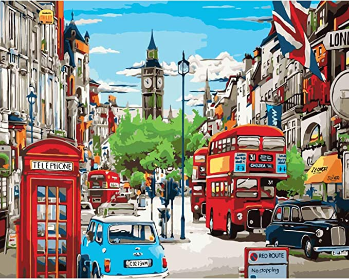
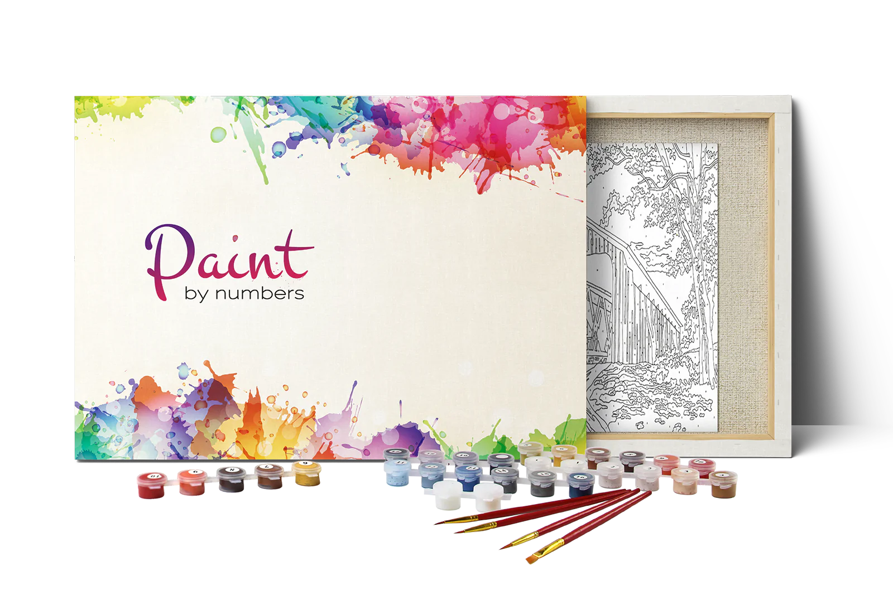
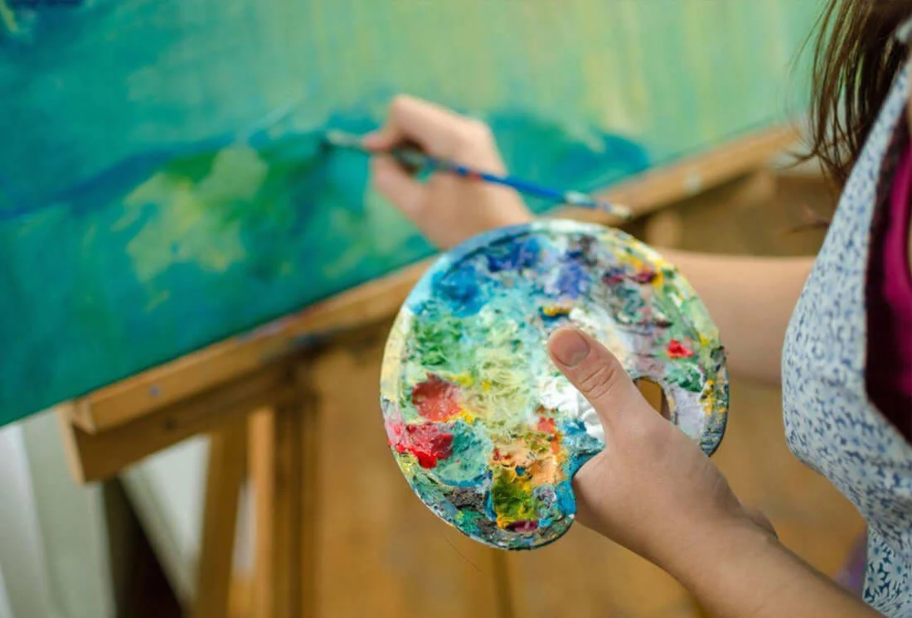

What is Painting By Numbers?
Painting by numbers is a way of painting a large picture with paint. The existing image is quickly separated into colored areas that are numbered.
Such an image is printed on a white canvas, which is later stretched on a stretcher. Along with the purchased picture, you also choose the appropriate set of paint in containers numbered according to the color areas.
Painting by numbers allows even people who have never taken painting seriously to paint a full-fledged painting. It may be a little difficult at first, but when you get used to it, the drawing process will stop in proper meditation. Someone calls the picture by numbers just a coloring page and does not attach any importance to it, while for someone it becomes a way to develop important skills and get inspired for their own masterpieces.
Painting by numbers has no special framework regarding age, education and physical condition. It is recommended for children from 7 years old and everyone who can hold a brush in their hand. Moreover, drawing large pictures by numbers has a good effect on the mental state and has a good effect on daily stress.
What is included in the Paint By Numbers Kit?
The paint by numbers kit consists of all the items you need to start painting. You just have to find a free place on the table or put an easel in the room. Also, please note that the canvas in the kit is fully prepared - it is stretched on the stretcher and primed, which is mandatory. And this is another fact that should be clarified when buying paintings by numbers. Such a canvas also brings you closer to professionals in the creative profession, because it is on this that they usually paint pictures.
So, the set of paintings by numbers is as follows:
- Numbered linen canvas
- Numbered acrylic paint set
- Set of 3 paint brushes
- Hanging kit, including:
- 2x screws
- 2x non-track hooks
How to Paint By Numbers?
It's tempting to paint so that you finish a section of the picture at a time, but that will necessitate a lot of brush washing and waste paint. Rather paint one color at a time, from the largest areas of this color to the smallest. Working from the top of the painting down helps prevent accidentally disturbing wet paint. By starting with the larger ones you'll be more practiced using the brush and paint by the time you get to the smallest areas, which can be quite fiddly to paint.
Here’s some extra paint by numbers blending tips to make sure you soften them edges like a pro:
- Blend when the paint is wet.
- Work gently and slowly. Smaller brush strokes are your best bet.
- Stick with smaller areas to start. The more you practice, the more daring you can be.
- Use blending for specific objects that make the most logical sense (ie. an ocean, the sky, a distant landscape, etc.)
What skills does Painting By Numbers develop?
Like any method of drawing, drawing by numbers contributes to the good development of fine motor skills of the hands. At first, you may feel that is uncomfortable for you to hold the brush and control the movements, but later everything will work out.
Also, a picture by numbers teaches you to complete an important task that a person has undertaken. Many psychologists call it a mistake that many people consider it a character trait. The ability to complete what is started is a skill that needs training. So, even the most restless child can train this skill.
Drawing by numbers has a calming effect on some people. You don't need to think about the composition and choose the colors yourself, so you can relax and just enjoy the painting process itself.